One weekend. 17 working projects.
Organised by NXT; sponsored by NewBee AI Club. Young builders from nine countries solved problems for real people they knew.
Film · Results · Report
NEWBEE AI CLUB · EVENTS & STORIES
Explore past NewBee AI Club events by date. Each English summary links to the full story.
Organised by NXT · Sponsored by NewBee AI Club
Young builders from nine countries made something useful for someone real. Watch the English showcase and explore the projects and support behind it.
55:52 showcase · Results & original report →English summaries are available for every event below. S01 also has a full English recap and original English video. Earlier full recaps remain in Chinese and are labelled accordingly.
14 event recaps
Organised by NXT; sponsored by NewBee AI Club. Young builders from nine countries solved problems for real people they knew.
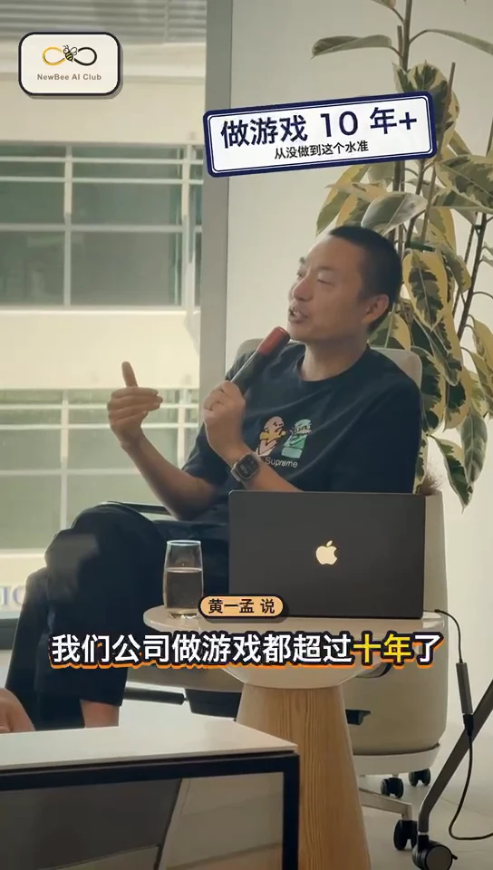
Speaker: Huang Yimeng (Dash) · XD CEO; founder of TapTap and VeryCD
AI-era game development and hands-on use of Cindy. Start by giving your idea a first version.
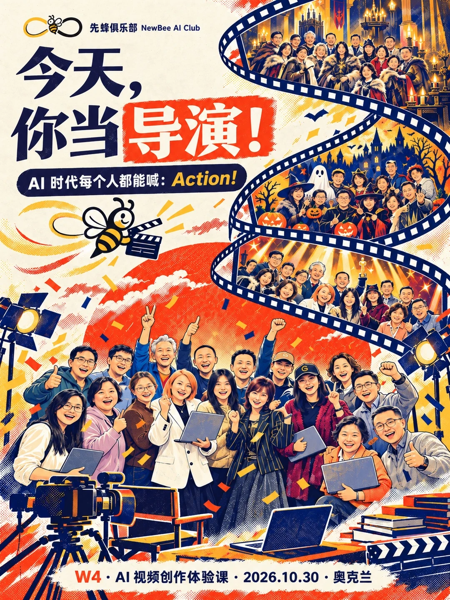
Speaker: Ma Yufeng · AIGC film and television director
From a creative idea to the language of shots: make your own AI-assisted film.
Speaker: Pin Zhou (Pingo) · In conversation: Ally Zhang and Wang Yonggang
Five human capabilities, three stories of growing up, and real experiences we cannot outsource.
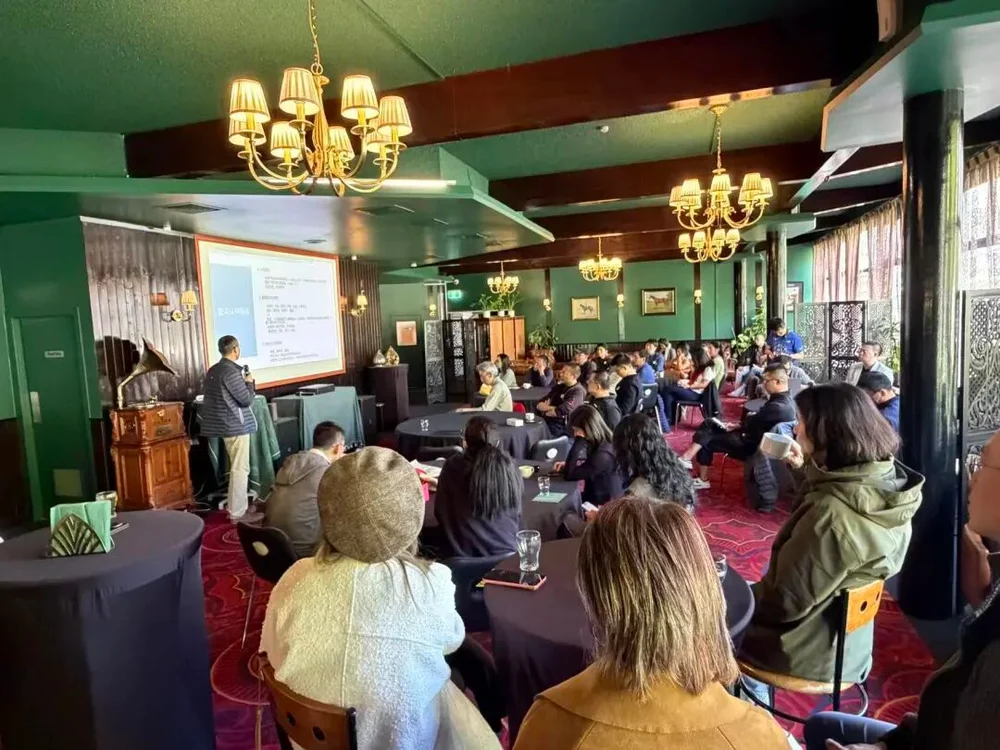
Speaker: Ferris Lu · In conversation: Wang Yonggang · Special guest: Huang Yimeng
From intelligent hardware to AI agents, and from products to the value people bring.
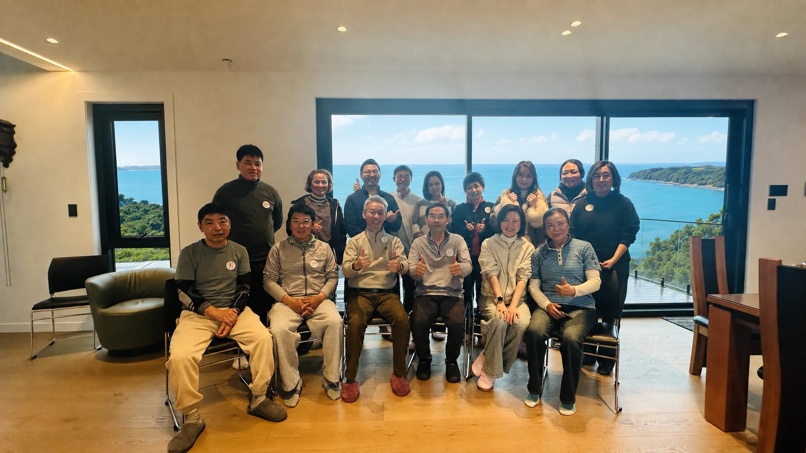
Card games, word games, baking, parenting and balancing family life.
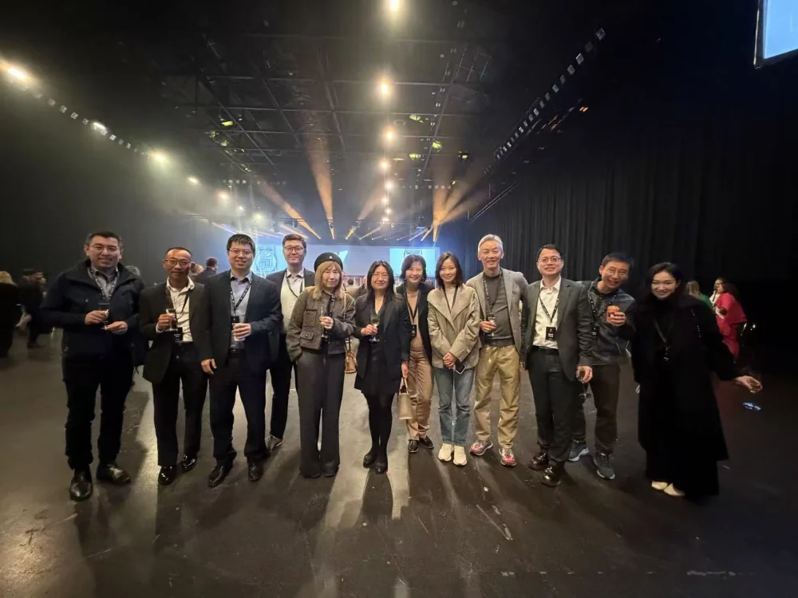
20 projects, over 1,000 investors and potential investors, and two tables of NewBee members attending the Icehouse Ventures event.
Speaker: Dr Hu Renfen (胡韧奋)
AI meets history and cultural psychology.
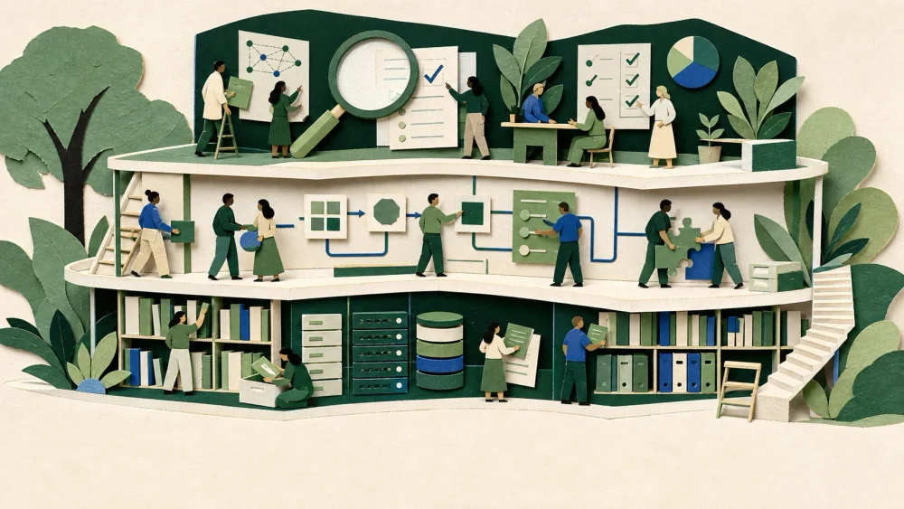
Speaker: Wang Yonggang
Understanding AI, learning to use it and building trust in it.
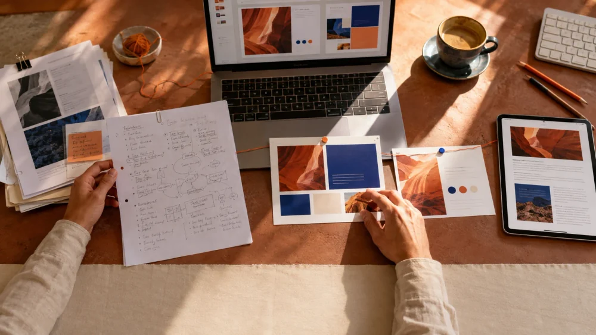
An online workshop on practical presentations and WeChat publishing workflows.
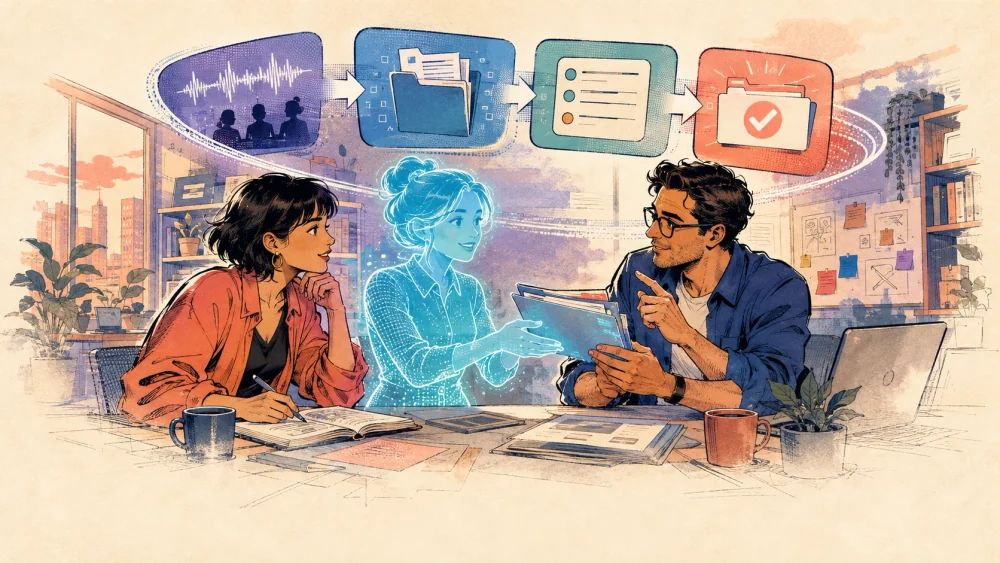
Speaker: Pin Zhou (Pingo)
Moving beyond chat into organisational context and complete business workflows.
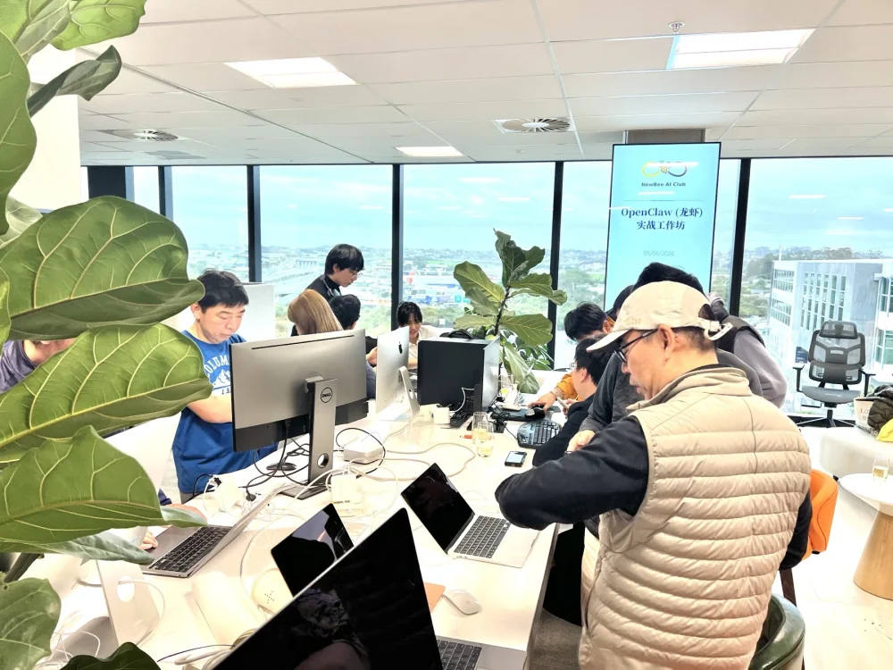
On-site installation, configuration and collaboration with AI automation.
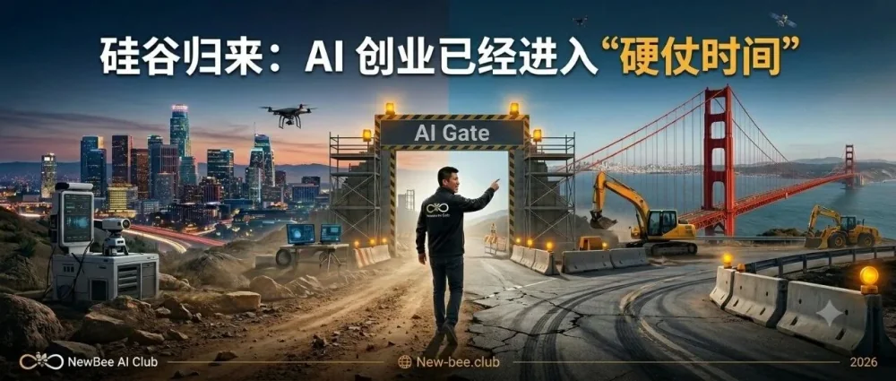
Speaker: Jason Wang (王磊)
Observations from the AI frontier and New Zealand startup examples.
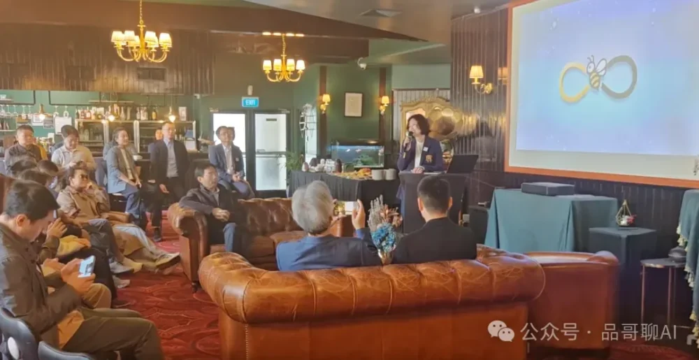
Our first founding-member meeting in Auckland.
NewBee AI Club holds local events in Auckland and online sessions. Each event specifies its own location and format. Read the English club guide to find a starting point.
No. NewBee is a Chinese-speaking learning community, and language arrangements vary. NXT Build Sprint was conducted in English. An English summary does not imply that the original session was in English or that every in-person event was livestreamed.
This archive records completed events, not open registrations. Check official announcements, subscribe to the event RSS feed, or contact office@new-bee.club for confirmed dates, locations and eligibility.